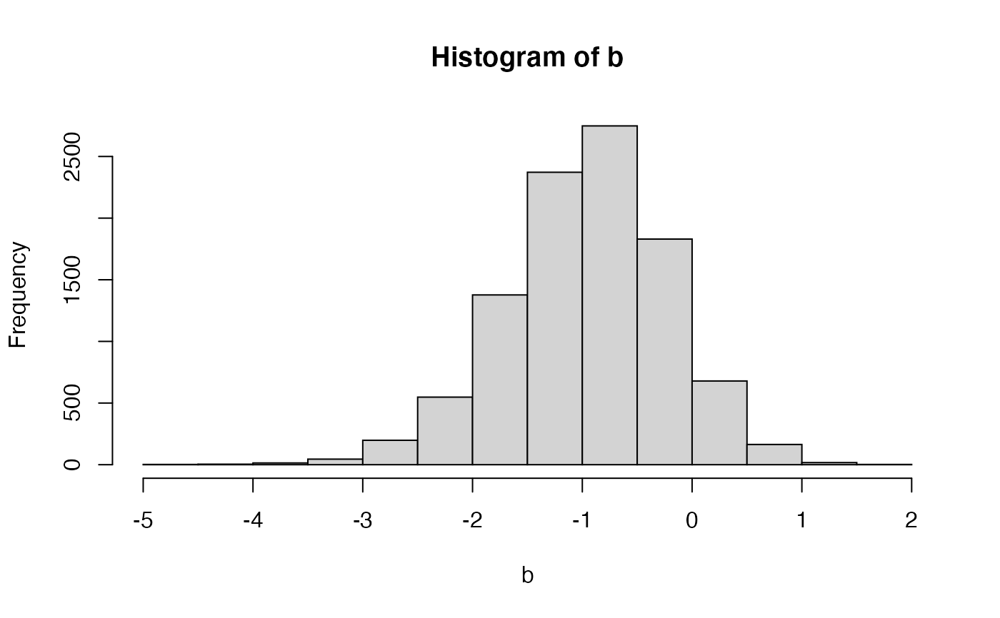

Generate random samples from the Polya-Gamma distribution
pgdraw(b, c, cores = 1L)
| b | Either a single integer scalar, or a vector of integers, corresponding to the
'b' parameter for the PG(b,c) distribution. If |
|---|---|
| c | A vector of real numbers corresponding to the 'c' parameter for the PG(b,c) distribution. |
| cores | A positive integer corresponding to the number of openMP cores to use. |
A vector of samples from the Polya-Gamma distribution, one for each entry of c
To cite this package please reference:
Makalic, E. & Schmidt, D. F. High-Dimensional Bayesian Regularised Regression with the BayesReg Package arXiv:1611.06649, 2016 https://arxiv.org/pdf/1611.06649.pdf
A MATLAB-compatible implementation of the sampler in this package can be obtained from:
http://dschmidt.org/?page_id=189
This code generates random variates from the Polya-Gamma distribution with desired 'b' and 'c' parameters. The underlying code is written in C and is an implementation of the algorithm described in J. Windle's PhD thesis.
The main application of the Polya-Gamma distribution is in Bayesian analysis as it allows for a data augmentation (via a scale mixture of normals) approach for representation of the logistic regression likelihood (see Example 2 below).
Jesse Bennett Windle Forecasting High-Dimensional, Time-Varying Variance-Covariance Matrices with High-Frequency Data and Sampling Polya-Gamma Random Variates for Posterior Distributions Derived from Logistic Likelihoods, PhD Thesis, 2013
Bayesian Inference for Logistic Models Using Polya-Gamma Latent Variables Nicholas G. Polson, James G. Scott and Jesse Windle, Journal of the American Statistical Association Vol. 108, No. 504, pp. 1339--1349, 2013
Chung, Y.: Simulation of truncated gamma variables, Korean Journal of Computational & Applied Mathematics, 1998, 5, 601-610
# ----------------------------------------------------------------- # Example 1: Simulated vs exact moments u = matrix(1,1e6,1) x = pgdraw(1,0.5*u) mean(x)#> [1] 0.2449181#> [1] 0.03966987#> $mu #> [1] 0.2449187 #> #> $var #> [1] 0.0396598 #>#> [1] 0.3803002#> [1] 0.0426024#> $mu #> [1] 0.3807971 #> #> $var #> [1] 0.04270248 #># ----------------------------------------------------------------- # Example 2: Simple logistic regression # Sample from the following Bayesian hierarchy: # y_i ~ Be(1/(1+exp(-b))) # b ~ uniform on R (improper) # # which is equivalent to # y_i - 1/2 ~ N(b, 1/omega2_i) # omega2_i ~ PG(1,0) # b ~ uniform on R # sample_simple_logreg <- function(y, nsamples) { n = length(y) omega2 = matrix(1,n,1) # Polya-Gamma latent variables beta = matrix(0,nsamples,1) for (i in 1:nsamples) { # Sample 'beta' s = sum(omega2) m = sum(y-1/2)/s beta[i] = rnorm(1, m, sqrt(1/s)) # Sample P-G L.Vs omega2 = pgdraw(1, matrix(1,n,1)*beta[i]) } return(beta) } # 3 heads, 7 tails; ML estimate of p = 3/10 = 0.3 y = c(1,1,1,0,0,0,0,0,0,0) # Sample b = sample_simple_logreg(y, 1e4) hist(x=b)#> [1] 0.2802996